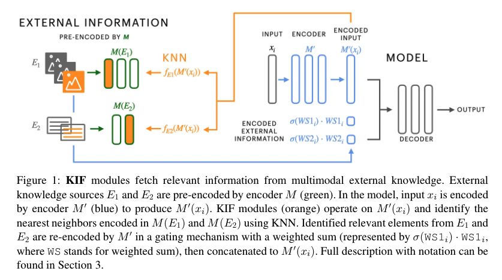
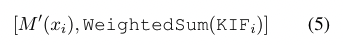
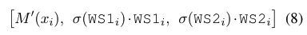

[TOC]
- Title: Augmenting Transformers with KNN-based composite memory for dialog
- Author: Angela Fan et. al.
- Publish Year: 2021
- Review Date: Apr 2022
Summary of paper
Motivation
The author proposed augmenting generative Transformer neural network with KNN based Information Fetching module
Each KIF module learns a read operation to access fix external knowledge (e.g., WIKI)
The author demonstrated the effectiveness of this approach by identifying relevant knowledge required for knowledgeable but engaging dialog from Wikipedia, images and human-written dialog utterances.
drawback of previous work
many existing approaches focus on using attention over the memory slots, which is computationally intensive and becomes less effective as the size of the memory grows.
Advantages of KNN read operation
In the proposed method, KNN search is computationally efficient and scalable.
we can thus scale easily to larger memories by learning only the KNN-based read operation to identify relevant information from the memory

The procedure
- first find the k nearest elements to f_E(M’(x_i)) in M(E), based on KNN search with inner product, concretely, f is a multiplayer perceptron with ReLU activator.
- when we get the relevant elements e_j identified by KIF, we re-encode it by M'
- since e_j and x_i may have variable length, we average across the length dimension to produce a fixed sided representation to conduct KNN
- the external knowledge elements {e_j, e_j+1…} are weighted by their normalised KNN score and then summed. Subsequently, we concatenate M’(x_i) to form the final encoder output

- finally, different sources of information may not be required for every prediction and some information sources E can be more important than others. To allow the model to make more fine-grained decisions about what information to use from what source and how much of it, we add a gating mechanism using a sigmoid (0-1) function around each weighted sum of KNN representations KIF_1, KIF_2, from E_1, E_2
- so the final output is

- so the final output is
Some key terms
dialog modelling
this is a challenging task where information must be flexibly retrieved and incorporated to maintain the topic and flow of conversations.
training after stabilised
the model also try to pass backpropagation gradient to encoding module after certain training steps.
- if we directly pass the gradient at the early stage. the noisy loss will mess up the pre-trained encoder module.
- to solve this, first of all, we separate M encoder into two parts.
- part 1 M is to fixed and encode the external knowledge
- part 2 M’ encode the dialog text, which is also dynamic and get updated every iteration
- they learn a mapping operator f_E(M’(x_i)) that trains to map elements of the model’s representation of X, into additional information representation space M(E)
- so f learns representations of an output close to the corresponding projection of X into E. This can be interpreted as learning a read operation on a fixed external memory.
- as the model changes significantly during training process, the nonlinear mapping capability of f_E(M’(x_I)) is essential to be able to identify the correct knowledge E from input X.
Minor comments
library faiss allow KNN to easily used on GPUs
Potential future work
good to try for NetHack environment